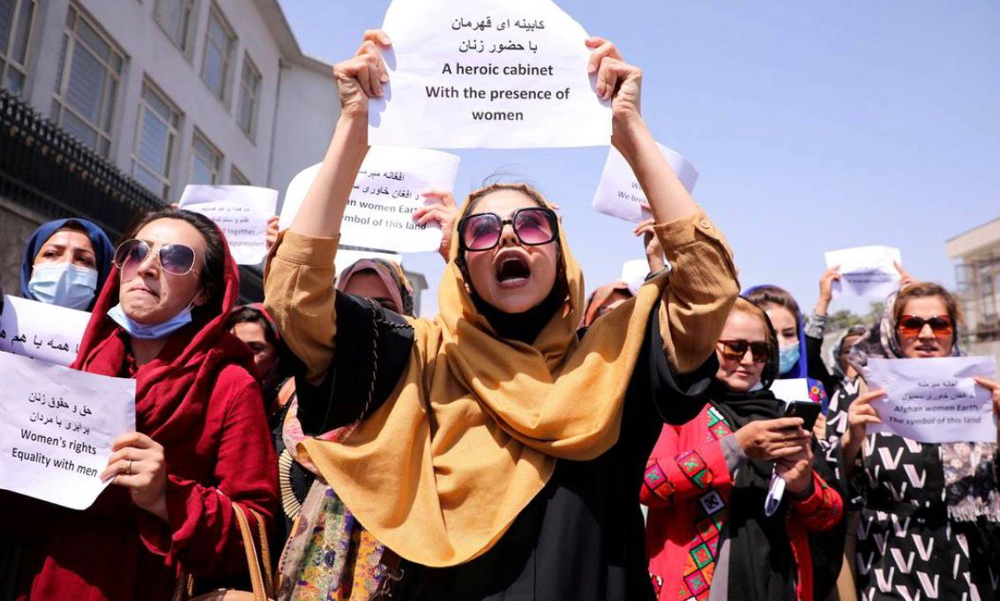
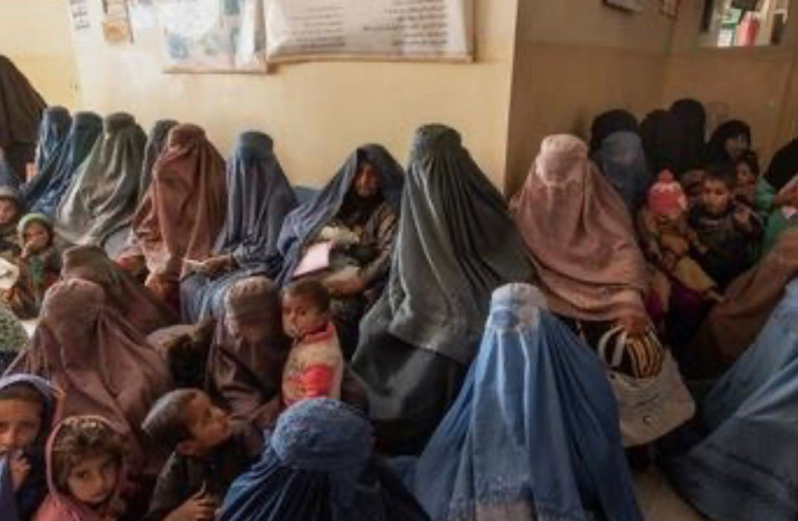

Solidariedade global
Mulheres no Afeganistão: o que elas passam
No Afeganistão, ser mulher hoje é viver sem direitos básicos. Desde que o Talibã voltou ao poder em 2021, as mulheres perderam quase tudo que tinham conquistado.
O que acontece com elas
- Proibidas de estudar e trabalhar: Meninas são proibidas de ir para a escola depois dos 12 anos. Mulheres não podem fazer faculdade e nem trabalhar na maioria das profissões. Elas foram apagadas da vida pública.
- Proibidas de sair sozinhas: Uma mulher não pode sair de casa sem um homem da família acompanhando. Não pode ir ao parque, à academia ou ao salão de beleza — que foram todos fechados.
- Roupas obrigatórias: Elas são obrigadas a usar burca, cobrindo todo o corpo e rosto. Se não usarem, sofrem punições violentas.
- Voz silenciada: Por lei, a voz de uma mulher é considerada “íntima” e não pode ser ouvida em público. Elas são proibidas de cantar, falar alto ou até de olhar pela janela.
Nós, da Rede Lilás, não podemos ficar em silêncio.


No Afeganistão, ser mulher virou um crime. Elas foram proibidas de estudar, de trabalhar, de sair de casa sozinhas e até de falar em voz alta em público. Sonhos foram trancados, escolas foram fechadas e vozes foram caladas à força.
Isso não é cultura. Isso é opressão. Isso é violência.
Justiça e liberdade
Justiça é o direito de uma menina de 12 anos voltar para a escola. Justiça é o direito de uma mulher ser médica, professora, ser o que ela quiser ser. Justiça é o direito de ir e vir, de falar, de existir sem precisar de permissão.
Elas precisam de liberdade.
- Liberdade para aprender.
- Liberdade para trabalhar.
- Liberdade para viver.
Que a nossa voz aqui no Brasil chegue até lá como um abraço de solidariedade. Que nenhuma mulher se sinta sozinha, nem aqui, nem no Afeganistão.
Lugar de mulher é onde ela quiser. Em qualquer lugar do mundo.
Voltar para a página inicial